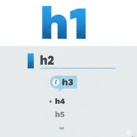

見出しタグ

- プロンプト例
HTMLの見出しの役割について解説して
- hは見出しを意味するheadingの頭文字を表しています
- hタグは、ページのタイトルや見出しに設定します
- hタグはh1からh2, h3…とh6まで使うことができます
- h3タグのあとにh2タグがくる、というのは好ましくありません
<h1>h1の見出しです。</h1> <h2>h2の見出しです。</h2> <h3>h3の見出しです。</h3> <h4>h4の見出しです。</h4> <h5>h5の見出しです。</h5> <h6>h6の見出しです。</h6>
HTMLの見出し（h1〜h6）の役割
1. 文書構造を表す（最重要）
見出しは、文書のアウトライン（骨組み）を作ります。
<h1>サイトのタイトル</h1> <h2>大見出し</h2> <h3>中見出し</h3> <h4>小見出し</h4>
このように階層構造を作ることで、
- 人間が読みやすくなる
- ブラウザ・検索エンジン・スクリーンリーダーが内容を理解しやすくなる
という効果があります。
2. SEO（検索エンジン最適化）に重要
【特に】
- h1 → ページ全体のタイトル（1つ）
- h2 → 大きな話題（章）
- h3 → h2の中の小見出し
- h4 → h3の補足
として扱われます。
❌ 悪い例
<div class="title">見出し</div>
⭕ 良い例
<h1>HTMLの見出しの役割</h1>
3. アクセシビリティ向上
- スクリーンリーダー（視覚障害者向け読み上げソフト）は、見出しをナビゲーションの目印として使います。
👉️ 見出しが正しく構造化されていないと、内容を把握しにくくなります。
4. 各見出しタグの役割
| タグ | 役割 |
|---|---|
| <h1> | ページ全体のタイトル（基本1つ） |
| <h2> | セクションの大見出し |
| <h3> | h2の補足・小分類 |
| <h4> | h3の補足 |
| <h5> | 補助的見出し |
| <h6> | 最も小さい見出し |
5. 正しい使い方の例
<h1>HTMLの基礎</h1> <h2>見出しタグとは</h2> <p>説明文...</p> <h2>見出しの使い方</h2> <h3>正しい構造</h3> <p>説明文...</p> <h3>よくある間違い</h3> <p>説明文...</p>
6. よくある間違い
❌ デザイン目的で使う
<h3>文字を大きくしたいだけ</h3>
👉️ CSSでサイズ指定すべき
.big { font-size: 24px; }
❌ 順番を飛ばす
<h1>タイトル</h1> <h3>小見出し</h3> <!-- h2を飛ばしている -->
👉️ 必ず順番を守る
まとめ
HTMLの見出しは：
- 文書構造を作る
- SEOを強化する
- アクセシビリティを向上させる
という非常に重要な役割を持っています。